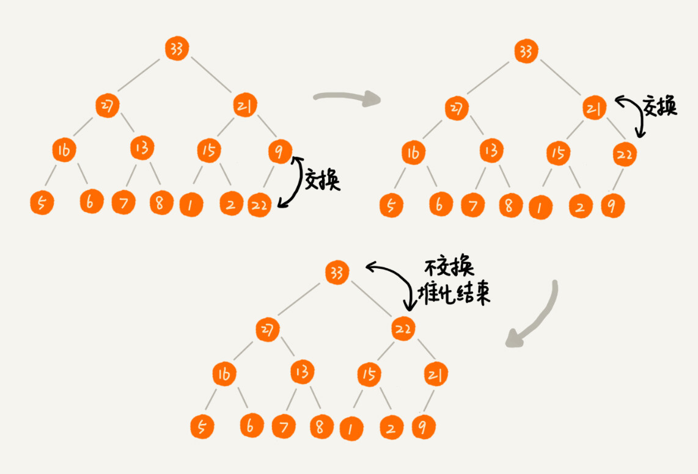
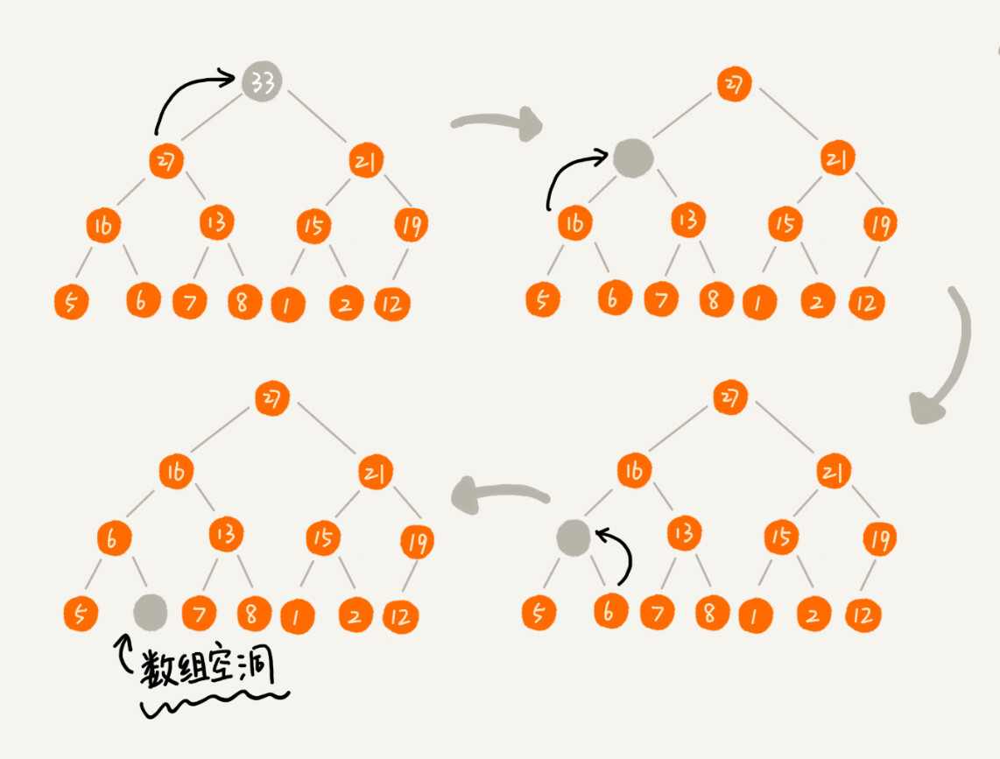
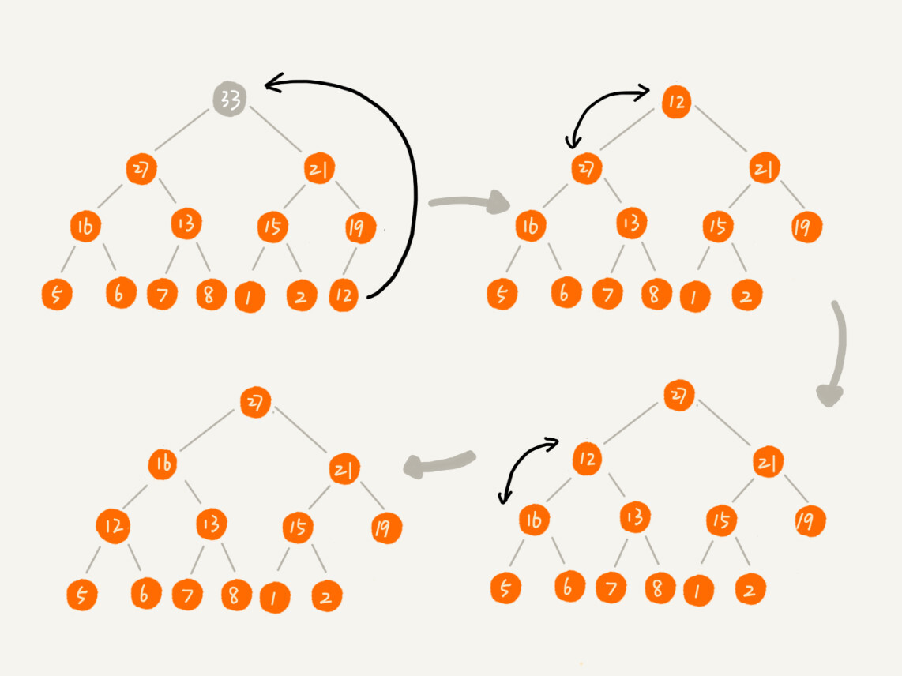

练习题目
堆排序
堆排序内部并不一定有序，但是作为最小堆(最大堆)的根是整个堆最小(最大)的，因此，持续的输入堆根便可以进行有序输出。
另外，堆的内部实际上是个完全二叉树。这里只谈论堆的插入删除和维护。
这里以最小堆为例
堆的插入
数据插入时，整个堆实际上已经维护完毕，所以只需要将数据存到数组末尾，然后与父节点对比，再由父节点与父节点的父节点对比，
代码如下
1
2
3
4
5
6
7
8
9
10
11
12
13
14
15
16
| void push(int n)
{
heap.push_back(n);
int par = (heap.size() - 1 - 1) / 2;
int index = heap.size() - 1;
while (index > 0 && heap[par] > n)
{
heap[index] = heap[par];
index = par;
par = (par - 1) / 2;
}
heap[index] = n;
}
|
堆删除
删除时因为堆属于完美二叉树的限制，所以不能直接从下到上维护。如下

因此，将末尾元素与根元素交换后，再由上到下对比。

同时，这也可以用来进行固定大小的堆排序，只需要将排序好的元素放在末尾，再将前方的元素维护。
代码：
1
2
3
4
5
6
7
8
9
10
11
12
13
14
15
16
17
18
19
20
21
22
23
24
25
26
27
28
29
30
| void pop() {
heap[0] = heap[heap.size() - 1];
int temp = heap[0];
heap.resize(heap.size() - 1);
int pre = 0;
while (pre * 2 + 1 <= (int)heap.size() - 1) {
if (pre * 2 + 2 < (int)heap.size()) {
next = heap[pre * 2 + 1] < heap[pre * 2 + 2] ? pre * 2 + 1 : pre * 2 + 2;
}
else {
next = pre * 2 + 1;
}
if (heap[pre] > heap[next])
{
heap[pre] = heap[next];
pre = next;
heap[pre] = temp;
}
else {
break;
}
}
}
|
优先队列
C++STL库里的优先队列
其实现原理也是堆，默认为最大堆。查看优先队列代码可以看到，_Ty为数据类型，_Container为保存数据的结构，而_Pr为比较函数。因此优先队列可以保存自定义数据和使用自定义比较方法。
1
2
3
4
5
6
7
8
9
10
11
12
13
14
15
16
17
18
19
20
21
22
23
| template <class _Ty, class _Container = vector<_Ty>,
class _Pr = less<typename _Container::value_type>>
class priority_queue
priority_queue<int>heap;
priority_queue<int, vector<int>, greater<int>> heap;
class Node{
public:
int a;
bool operator>( Node& node) {
return a > node.a;
}
};
struct Cmp {
constexpr bool operator()( Node& a, Node& b)
{
return a > b;
}
};
priority_queue<Node, vector<Node>, Cmp> heap;
|